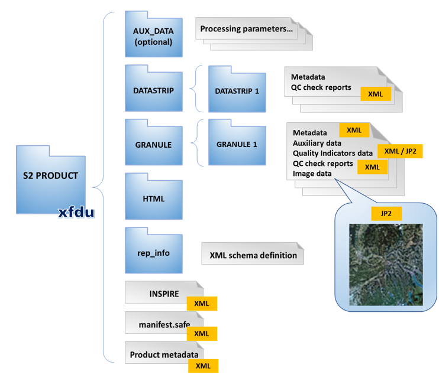
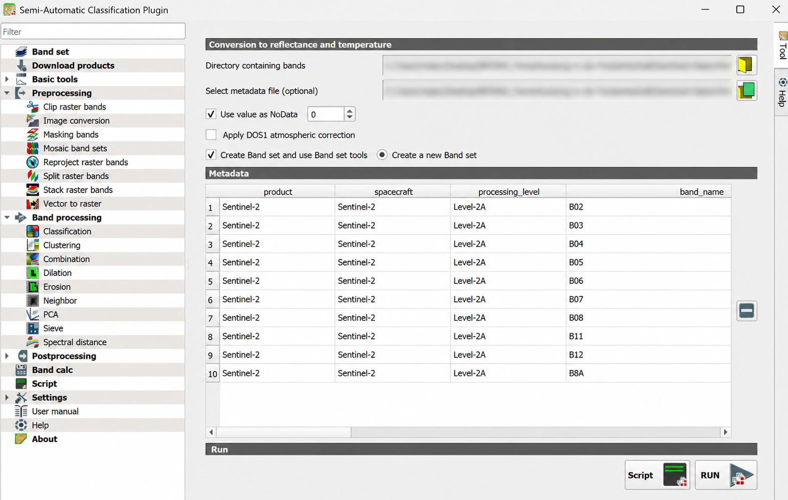
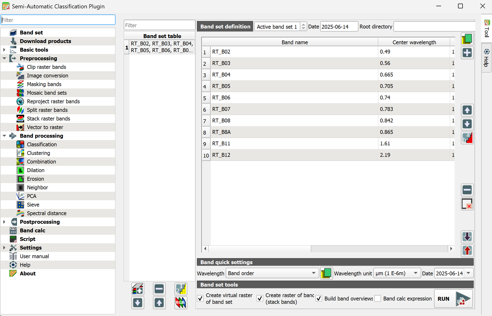
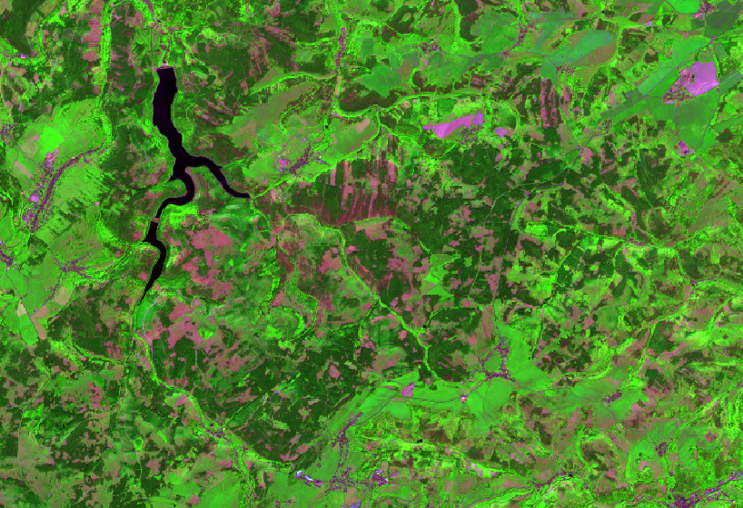

3 Vorverarbeitung
Satellitendaten bestehen zunächst aus einzelnen Bändern mit digitalen Grauwerten (DN) und den zugehörigen Metadaten. Vor der Berechnung von Indizes -und insbesondere einer Zeitreihenanalyse- müssen diese digitalen Grauwerte der Bänder in ihre Reflektanzwerte überführt und als gemeinsamer Datensatz zusammengeführt werden. Die Vorprozessierung schafft daher eine vergleichbare Ausgangsbasis für jegliche fernerkundungsbasierte Analysen.
3.1 Bandspezifikationen
In den nächsten Einheiten wird mit folgenden Bändern gearbeitet:
| Band | Spektralbereich | Auflösung | Verwendung |
|---|---|---|---|
| B02 | Blau | 10 m | Echtfarben, Atmosphäre/Trübung |
| B03 | Grün | 10 m | Echtfarben, Wasser-/Vegetationskontraste |
| B04 | Rot | 10 m | Echtfarben, NDVI |
| B05 | Red Edge 1 | 20 m | Vegetationszustand, Baumartenunterschiede |
| B06 | Red Edge 2 | 20 m | Vegetationsstruktur, Kronenunterschiede |
| B07 | Red Edge 3 | 20 m | Vegetationsvitalität, Klassifikation |
| B08 | Nahes Infrarot breit | 10 m | Vegetation, NDVI |
| B8A | Nahes Infrarot schmal | 20 m | Vegetationszustand, Klassifikation |
| B11 | SWIR 1 | 20 m | Feuchte, Trockenstress |
| B12 | SWIR 2 | 20 m | trockene Oberflächen, Vegetationsunterschiede |
Die Bänder behalten bei der Vorprozessierung ihre räumliche Auflösung von 10 beziehungsweise 20 m. Das SCP-Plugin verwaltet die Bänder zunächst gemeinsam in einem so genannten Band Set und erzeugt daraus die Inputlayer für die Geoverarbeitung.
3.2 Vorprozessierung eines Satellitenbildes
3.2.1 Bänder für SCP vorbereiten
Sentinel-2-L2A-Daten werden als SAFE-Ordnerstruktur bereitgestellt. Bilddaten im Format .jp2 und Metadaten im Format .xml liegen darin in verschiedenen Unterordnern. Für die Vorprozessierung im SCP-Plugin werden die benötigten Bänder und die zugehörige Metadatendatei aus dieser Struktur in einen gemeinsamen Arbeitsordner kopiert.

Nach der SCP-FAQ muss die Bandnummer den alleinigen Dateinamen bilden, zum Beispiel B02.jp2.
| Originaltyp | Zielname |
|---|---|
..._B02_10m.jp2 |
B02.jp2 |
..._B03_10m.jp2 |
B03.jp2 |
..._B04_10m.jp2 |
B04.jp2 |
... |
BXX.jp2 |
- Legen Sie den Ordner
01_rohdaten/S2_20250614an. - Kopieren Sie die benötigten
.jp2-Bänder und die zugehörige MetadatendateiMTD_MSIL2Ain diesen Ordner. Alle Dateien müssen auf derselben Ordnerebene liegen. - Benennen Sie die
.jp2-Bänder nach dem Zielschema der obigen Tabelle um.
3.2.2 Vorprozessierung in SCP
Öffnen Sie QGIS und speichern Sie das Projekt als einheit_3.qgz.
Die Vorprozessierung erfolgt in SCP anhand der Sentinel-2-Metadaten. Bei einem Level-2A-Produkt wendet der Befehl Image conversion die hinterlegten Skalierungsfaktoren an und überführt die digitalen Grauwerte (DN) in Reflektanzwerte.
- Öffnen Sie SCP > Preprocessing > Image conversion.
- Wählen Sie unter Directory containing bands den vorbereiteten Ordner
01_rohdaten/S2_20250614. - Falls die Metadaten nicht automatisch erkannt werden, wählen Sie unter Select metadata file (optional)
MTD_MSIL2Aaus demselben Ordner. - Prüfen Sie in der Tabelle Metadata, ob Sentinel-2, Level-2A und die Bänder
B02,B03,B04,B05,B06,B07,B08,B8A,B11undB12erkannt wurden. - Lassen Sie Use value as NoData mit dem Wert
0aktiviert. Aktivieren Sie Apply DOS1 atmospheric correction nicht, da bereits ein Level-2A-Produkt verwendet wird. - Aktivieren Sie Create Band set and use Band set tools und wählen Sie Create a new Band set.
- Klicken Sie auf RUN und speichern Sie die Ausgaben im Ordner
02_vorverarbeitung/S2_20250614_prep. - Prüfen Sie, ob die erzeugten Reflektanzbänder mit dem Präfix
RT_in QGIS geladen und einem neuen Band Set zugeordnet wurden.

Die erzeugten RT_-Bänder behalten ihre räumliche Auflösung. Bänder mit 10 und 20 m Pixelgröße dürfen deshalb im Band Set gemeinsam vorkommen.
3.2.3 Band Set und Virtual Raster in SCP erstellen
Nach der Konvertierung enthält die Szene ein eigenes Band Set. Darin werden Reihenfolge, Wellenlängen und Aufnahmedatum geprüft.
- Öffnen Sie SCP > Band set.
- Wählen Sie in der Band set table das Band Set vom 14. Juni 2025 und setzen Sie es als Active band set.
- Prüfen Sie in der Band set definition die Reihenfolge:
RT_B02,RT_B03,RT_B04,RT_B05,RT_B06,RT_B07,RT_B08,RT_B8A,RT_B11,RT_B12. - Prüfen Sie die Center wavelength. Falls die Werte fehlen, wählen Sie unter Band quick settings > Wavelength die Vorlage Sentinel-2.
- Tragen Sie unter Date das Aufnahmedatum der Szene ein.
- Aktivieren Sie unter Band set tools die Optionen Create virtual raster of band set und Create raster of band set (stack bands). Dadurch wird das Band Set lokal gespeichert. Aktivieren Sie zusätzlich Build band overviews.
- Klicken Sie auf RUN und speichern Sie die Ausgaben im Ordner
02_vorverarbeitung/S2_20250614_prep/, zum Beispiel alsS2_20250614_bandset.vrtundS2_20250614_stack.tif.

Ein Virtual Raster (.vrt) ist zunächst nur eine Verknüpfung auf die einzelnen Rasterdateien. Das spart Speicherplatz und ist für die Arbeit im Kurs meist ausreichend. Der zusätzlich erzeugte Bandstack ist eine physische Rasterdatei und kann unabhängig von den einzelnen Quelldateien weitergegeben werden.
Mit dem SCP-Bandstack entsteht in QGIS eine neue, fortlaufende Bandreihenfolge. Die ursprünglichen Sentinel-2-Nummern bleiben nicht erhalten, weil nicht benötigte Bänder wie Aerosol, Wasserdampf und Cirrus fehlen. Ab diesem Punkt beziehen sich Bandnummern in QGIS-Befehlen immer auf die Position im folgenden Stack:
| Sentinel-2-Band | QGIS-Stackband |
|---|---|
B02 (Blau) |
Band 1 |
B03 (Grün) |
Band 2 |
B04 (Rot) |
Band 3 |
B05 (Red Edge 1) |
Band 4 |
B06 (Red Edge 2) |
Band 5 |
B07 (Red Edge 3) |
Band 6 |
B08 (NIR breit) |
Band 7 |
B8A (NIR schmal) |
Band 8 |
B11 (SWIR 1) |
Band 9 |
B12 (SWIR 2) |
Band 10 |
Steht dagegen ausdrücklich B02, B8A oder B12, ist der ursprüngliche Sentinel-2-Bandname gemeint.
3.2.4 Farbdarstellungen prüfen
- Öffnen Sie mit Rechtsklick auf
S2_20250614_stack.tifProperties > Symbology. - Erzeugen Sie eine Echtfarbenansicht mit Red band = Band 3, Green band = Band 2 und Blue band = Band 1.
- Erzeugen Sie eine Color-Infrared-Ansicht mit Red band = Band 7, Green band = Band 3 und Blue band = Band 2.
- Erzeugen Sie eine SWIR-Ansicht mit Red band = Band 10, Green band = Band 7 und Blue band = Band 3. Alternativ verwenden Sie Band 9 als roten Kanal.
- Zoomen Sie auf Gösselsdorf und vergleichen Sie Wald, Offenland, Wege, Schatten und Siedlungsflächen.

Welche Farbkombination sehen Sie hier? Können Sie Gösselsdorf auf dem Satellitenbild finden?
3.2.5 Auf AOI zuschneiden
Das Zuschneiden erfolgt für alle vorprozessierten Einzelbänder im SCP. Als Eingabe dient das Band Set mit den RT_-Bändern, als räumliche Begrenzung der Vektorlayer AOI-buffer.
- Öffnen Sie SCP > Preprocessing > Clip raster bands.
- Wählen Sie unter Select input band set das Band Set mit den zehn
RT_-Bändern vom 14. Juni 2025. - Aktivieren Sie Use vector for clipping und wählen Sie
AOI-bufferals Vektorlayer. - Tragen Sie unter Output name das Präfix
clip_ein. - Klicken Sie auf RUN und wählen Sie
02_vorverarbeitung/S2_20250614_prep/clipals Ausgabeordner. - Prüfen Sie, ob SCP zehn zugeschnittene Einzelbänder mit Namen wie
clip_RT_B02.tifbisclip_RT_B12.tiferzeugt und in QGIS geladen hat. - Öffnen Sie SCP > Band set und erstellen Sie ein neues Band Set.
- Aktualisieren Sie die Layerliste und fügen Sie alle
clip_-Bänder in der ursprünglichen Sentinel-2-Reihenfolge hinzu. - Wählen Sie unter Band quick settings > Wavelength den Eintrag Sentinel-2, tragen Sie das Aufnahmedatum
2025-06-14ein und aktivieren Sie das neue Band Set. - Aktivieren Sie unter Band set tools die Option Create virtual raster of band set, klicken Sie auf RUN und speichern Sie die Ausgabe als
s2_20250614_aoi.vrt. - Visualisieren Sie das Virtual Raster mit einer der Farbkombinationen aus Abschnitt 3.2.4 und prüfen Sie, ob der Ausschnitt vollständig durch
AOI-bufferbegrenzt ist.